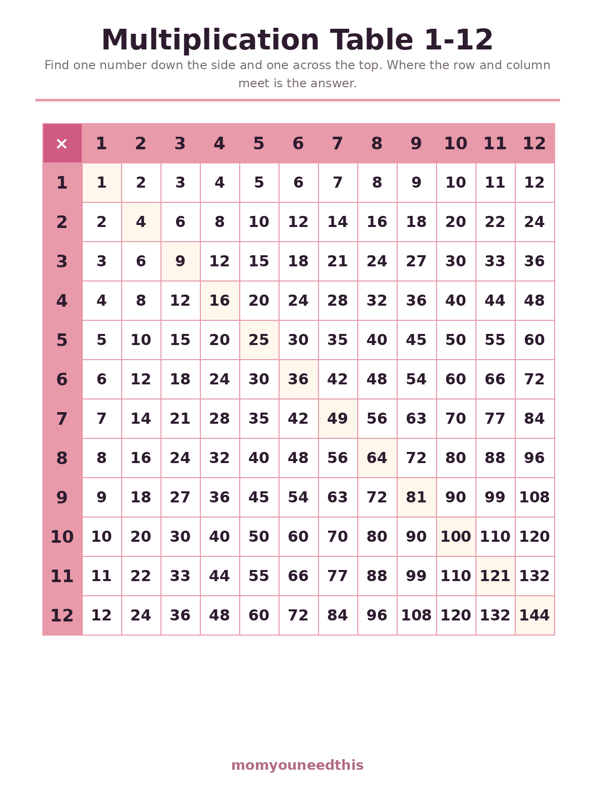
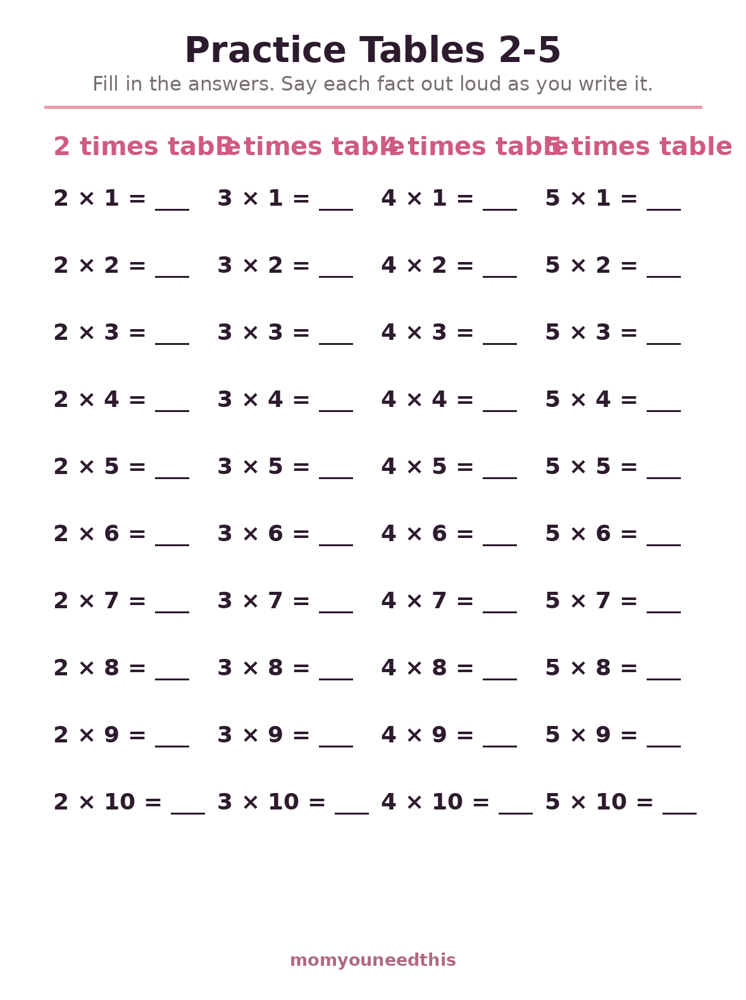
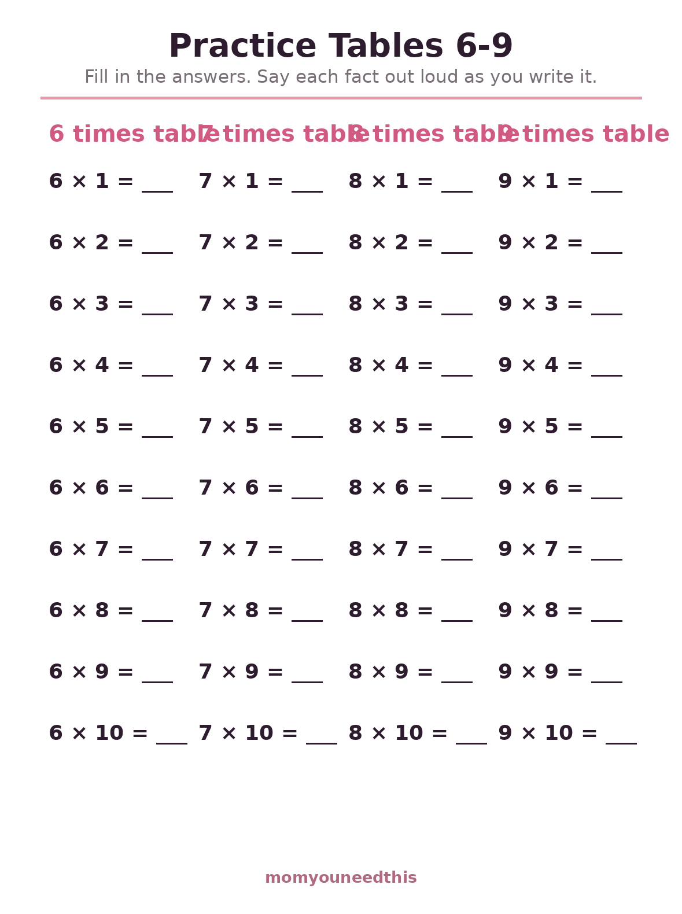
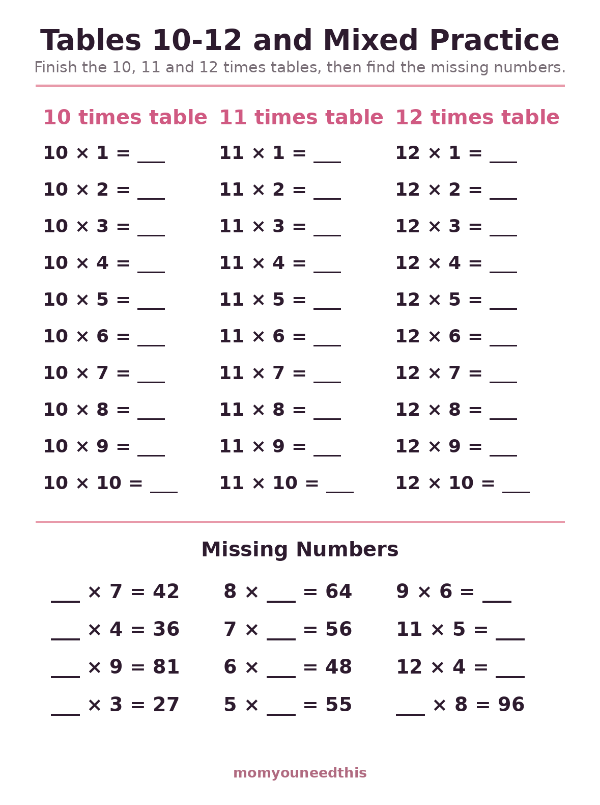

Multiplication Table 1-12 The Full Chart to 12 × 12 — Plus Practice Sheets
This page is the complete multiplication table 1-12: one full chart running from 1 × 1 to 12 × 12, plus three practice sheets so your child can fill the tables in from memory — 2 to 5, 6 to 9, and 10 to 12 with missing-number problems. It is made for ages 7 to 9. If you are starting smaller, our early multiplication page begins with a 1–10 chart and equal groups; this page is the step after it. Free to print, with no signup.
Last updated: October 21, 2026
Quick Answer
The full multiplication table 1-12 on one printable chart — every fact to 12 × 12 = 144 — plus three practice worksheets: tables 2–5, tables 6–9, and tables 10–12 with a mixed missing-number section. The chart is a filled-in reference to learn from; the practice sheets are blank to complete. Made for ages 7 to 9.
At a Glance
- Ages: 7–9 (grades 3–4)
- What you get: 1 full 1–12 chart + 3 practice worksheets
- Tables covered: All of them — 1 through 12
- How this differs: This chart goes to 12 and the sheets test recall; the early multiplication page stops at 10 and teaches the ideas first
- Cost: Free — no signup, no email
🔢 The Full 1–12 Chart
The whole landscape on one page: every fact from 1 × 1 up to 12 × 12, with the square numbers highlighted down the diagonal. Print it for the homework table and expect it to be used actively — find the row, find the column, meet at the answer. The patterns teach quietly in the background: the 5s ending in 0 and 5, the 10s trailing their zero, and the mirror symmetry that proves 6 × 8 and 8 × 6 are the same fact wearing two coats.

✖️ Download Your Free Multiplication Table Chart
Every fact from 1 × 1 to 12 × 12 on one page
⬇️ Download Free Chart 🖨️ Print🎁 Free printable for ages 7–9
✏️ Practice Tables 2–5
The friendliest tables first: the 2s, 3s, 4s and 5s, each written out from ×1 to ×10 with the answers left blank. Filling a whole table in order lets your child ride the pattern — count on by 3s, watch the 5s alternate 5, 0, 5, 0 — instead of facing random facts cold. Saying each fact out loud while writing it doubles the memory work for free, and in-order multiplication table worksheets like this one make the patterns impossible to miss.

✏️ Download Your Free Practice Tables 2–5 Worksheet
Tables 2, 3, 4 and 5 — 40 facts to fill in
⬇️ Download Free Worksheet 🖨️ Print🎁 Free printable for ages 7–9
✏️ Practice Tables 6–9
These are the tables where patterns get shy and memory has to help: the 6s, 7s, 8s and 9s, in order, answers blank. The 9s hide a trick worth showing your child — the digits of every answer add up to 9 (9 × 4 = 36, and 3 + 6 = 9) — and every hard fact can lean on a known one: 6 × 7 is just 5 × 7 plus one more 7. In-order practice makes those rescue routes visible.

✏️ Download Your Free Practice Tables 6–9 Worksheet
Tables 6, 7, 8 and 9 — 40 facts to fill in
⬇️ Download Free Worksheet 🖨️ Print🎁 Free printable for ages 7–9
🧩 Tables 10–12 & Missing Numbers
The final sheet finishes the set — the 10s, 11s and 12s in order — then changes the game: twelve missing-number problems (___ × 7 = 42, 8 × ___ = 64) that run the facts backwards. Working backwards from the answer is the exact move long division will demand next year, and it is where times tables multiplication worksheets stop being copying practice and start being thinking practice.

🧩 Download Your Free Tables 10–12 Worksheet
Tables 10, 11 and 12 plus 12 missing-number problems
⬇️ Download Free Worksheet 🖨️ Print🎁 Free printable for ages 7–9
🖨️ How to Use the Chart and Sheets
- Chart first, and keep it visible. The chart is a reference, not a test. Pin it where homework happens and let your child look answers up — the looking is what builds the memory.
- One practice sheet per sitting. A whole table filled in carefully beats three tables rushed. Short sittings, finished well, are what turn into fluency.
- Say each fact out loud. Hearing 7 × 8 = 56 in their own voice adds an audio copy of the fact to the visual one. Chant the finished table top to bottom as a finale.
- Save missing numbers for last. The backwards problems are the boss level. Once the three practice sheets feel comfortable, they become the favorite — most kids love the detective work.
🔍 Patterns Do Half the Memorizing
The full table looks like 144 facts, but it is really far fewer. Because 4 × 7 and 7 × 4 give the same answer, every fact appears twice — learn one and its mirror is free, which cuts the work nearly in half. The diagonal of squares (1, 4, 9, 16, 25…) anchors the grid, and each table hangs off a neighbor: the 6s are the 5s plus one more group, the 12s are the 10s plus the 2s. A child shown these connections memorizes a network; a child left alone with the grid memorizes a phone book. Point at the patterns together during the first week with the chart and you will hear your child start narrating them unprompted — that narration is the sound of the table becoming theirs.
🧮 Start With Ideas, Then Come Here for Recall
This page assumes your child already knows what multiplication means. Our multiplication worksheets page builds that foundation with a 1–10 chart, equal groups, arrays and skip counting — start there if groups of dots still need explaining. This page is the next stage: the chart grows to the full 1–12, and the practice sheets ask for recall instead of counting. Keeping the two pages in that order — understanding first, memorizing second — is what makes the facts stick instead of evaporating after the test. The fractions work on this site leans on exactly the fluency built here, which is why the table is worth finishing properly.
🏁 When the Chart Can Come Down
There is no deadline for retiring the chart, and taking it down early to force memorization usually backfires into guessing. It has earned its retirement when your child stops glancing at it during homework, answers the missing-number problems without hunting, and starts correcting your deliberate mistakes at the dinner table. Even then, keep it in a drawer rather than the recycling — long division and fraction simplification both send children back to the table for a while, and having the old chart appear again, familiar as a map of somewhere they have already traveled, is a comfort rather than a confession.
✖️ More Math for Moms & Kids
✖️ Multiplication Worksheets
The ideas-first page: a 1–10 chart, equal groups, arrays and skip counting. Start with the ideas.
🍕 Fractions Worksheets
Equal parts, fractions of a set and a first multiplying sheet — powered by these tables. Try fractions.
2️⃣ Odd & Even Numbers
The pattern hiding inside the 2 times table, explored on its own page. Explore odd and even.
🧒 Older Kids Hub
Every worksheet and practice page for ages 5–8 in one place. Browse Older Kids.
❓ Multiplication Table FAQ
What is the multiplication table 1-12?
It is the complete multiplication grid: every times fact from 1 × 1 = 1 up to 12 × 12 = 144, arranged so the first factor runs down the side and the second across the top. The cell where a row and column meet holds the answer. On this page it prints as one full chart on a single page.
What is the difference between this page and the early multiplication page?
The early multiplication page teaches what multiplication means — equal groups, arrays and skip counting — with a chart that stops at 10. This page assumes that understanding and goes further: the chart runs the full 1 to 12, and the worksheets practice recall, including missing-number problems that run facts backwards.
Should my child memorize the whole table at once?
No — one table at a time, in the order the practice sheets use: 2s through 5s first, then 6s through 9s, then 10s, 11s and 12s. Each new table borrows from the ones before it, so the load gets lighter as they go, not heavier.
Are the answers printed anywhere?
The chart itself is filled in — it is the reference. The three practice sheets are blank, and nothing else on them is pre-filled. When a practice answer is in doubt, checking it against the chart is part of the routine, not cheating.
What age is the multiplication table 1-12 for?
Most children work on the full table around ages 7 to 9, in grades 3 and 4, once the ideas behind multiplication are secure. A confident 6-year-old who already knows the 2s, 5s and 10s can start with the first practice sheet; there is no harm in looking at the big chart early.
Is the 1-12 chart free to print?
Yes — the chart and all three practice worksheets are free to print at home, with no signup, no account and no email. Print a second chart for the bedroom wall if your child likes one there.